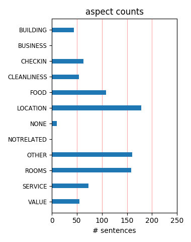
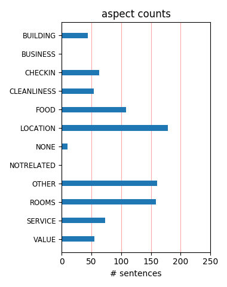

The hotel was best placed for our stay in Rome. The cleanliness of the hotel was good. Room size was in my mind, small. My sons air con was faulty, whilst this resulted in a reduction it shouldn't have happened. Staff were however, very good. I would stay at this hotel again.
This hotel was a very nice surprise. I usually don't expect much of a 3-star hotel but this was VERY GOOD! Cool interior, fresh and delicate, friendly and helpful stafff, nice room, quiet and perfect location. I thought it was a 4 star hotel. I will stay here next time I go to Rome.
I give this hotel five out of five stars. The breakfast included was sumptuous, seven to ten a.m. The main desk is very helpful in getting you to your destination, either with directions or providing a taxi. The street is one way and smaller than the major streets, so the traffic is not as heavy.
Friendly staff, Clean rooms, Central location we could not have asked for anything better. Although this hotel did not provide evening meals there was no shortage of places to eat nearby. The Piaza Navona was within easy walking distance and was a wonderful place to spend an evening with a wonderful ambiance
This hotel was well located for the things we wanted to do in Rome. We used their airport pickup service and it worked very well. The room and bathroom easily accomodate 3 people. The only down side was the internet access which did not work at all for accessing our e-mails. Staff was friendly and very helpful.
This is a great hotel which makes it really easy to explore all of Rome's main sites by foot. There are lots of good eating places nearby too. We stayed in the new part of the hotel and the rooms were good. The front office staff were really helpful too when we wanted to book stuff. Would definitely recommend it.
Great location, can walk to most sites in the city . Relativeley quiet location. Rooms were small ( as in many hotels in Europe for that price) but were clean and comfortable. It is better value than other hotels I have stayed at in Rome for similar prices. I will always stay here in the future when visiting Rome
This is a lovely hotel with good service, modern, clean rooms with spare modern furniture that is well located near the Piazza Navona. The room was extremely quiet thatnks to very secure windows. It has a great breakfast that is included and the staff was always friendly and helpful. I wold absilutely stay here again and again when i vist Rome.
The hotel itself was very nice for a very central postion, no complaints except my newly purchased lingeria went missing. The manager very politley told me that "the staff had been there many years and that guests often said they had lost things when they hadn't". No signs of a complaints procedure or apology. It was such a shame so beware of walking underwear
Hotel Adriano is a gem of a hotel. I was really nervous booking as there is so many to hotels to choose from but this hotel had it all. Within walking distanct of all major attractions and a really good breakfast to stay your day off right. The rooms was lovely with a small terrace to relax on with a glass of wine at the end of a long day of sight seeing. Perfect
This hotel is so convenient to all the marvelous sights of central Rome. We could walk everywhere from the Vatican to the Colosseum, and beyond. We enjoyed the evenings in the lobby with a glass of wine. The rooms were small but well equipped. Breakfast each day was excellent with a variety of items served buffet style. I would return here on my next visit to Rome.
Stayed 3 nights in perhaps one of the newer rooms. It was spacious (for Rome) and very quiet. Wifi was free in the room. Used the lobby computer to book Vatican tickets in advance, send the confirmation to the front desk, and they printed our receipt for us. As we are independent travelers we did not use the front desk for much, but they were kind enough when approached.
We stayed for 3 nights in a double standard. Had a balcony to our surprise. Staff was great. Location outstanding. Breakfast was delicious and plentiful. Loved the blood-red OJ from sicily. Hotel felt safe. Newly renovated. Room and bathroom size pretty good. Larger than expected for Europe. Although shower was small but that's everywhere. Definitley would stay there again.
My wife and I just returned from a trip to Italy and we stayed at the Adriano in Rome. We would recommend it highly. The location is perfect. The front desk staff was very helpful and friendly. The breakfast was excellent. The hotel is really very nice. The room itself was a bit small, but typical of Europe...the bathroom and shower were good, so no complaints about room or noise.
The hotel itself has nothing special but its location couldn´t be better. It´s within walking distance to the most famous sites in Rome. Professional service. We didn´t use the parking but were offered to. Breakfast was very good, too. We stayed there in the beginning and the end of the trip and in the second time we got a surprising upgrade concerning the rooms which pleased us a lot.
Adriano is in a great central location and has interesting, quite funky decor in public areas. Room was good size for Europe - had a 'modern' one with terrace which was lovely, and a good size up to date bathroom. Breakfast was good and as well as the usual continental fare had scrambled egg and bacon. Reception staff were friendly and spoke good English and gave good local restaurant recommendation.
Best location. Quaint, cozy and clean. Sylvia was a great help and most kind. Stayed 5nights w/terrace room. One note for the terrace, the chair and chaise are stylish but not comfy. Still, it worked for having some vino and chilling while getting fresh air. Left windows open at night for the fresh are and to hear the church bells. Little to no car noise at all. Simply wonderful. Thank you Sylvia!!!!
Stayed in this Hotel for 4 nights whilst visiting Rome. What can I say, for us the Hotel was in a perfect location with all the major sights within walking distance. The staff were pleasant and friendly. We stayed in a room with a terrace which was great for relaxing with a glass of wine after a day walking around the wonderful sights of Rome. There was plenty of fresh food to choose from at breakfast.
My husband and I stayed at the Hotel Adriano on three separate trips to Rome. Our first two trips were in 2006 and our reviews of the hotel were excellent. After our more recent stay in 2008, we will not be returning to this hotel should we find ourselves in Rome in the future. The hotel has a great location but the unfriendly staff and unclean rooms are not what one would expect for this level of hotel.
We loved the contemporary decor mixed with old world artifacts at this lovely property so close to Piazza Navona and Pantheon areas. Breakfast room was beautifully lit and comfortably large. The breakfast was great too! Only downside is that curtain door to bath does not afford enough privacy if you are traveling with an older child. Ask for a room that has the new decor. We would certainly stay here again.
I really loved this Hotel and the location! I felt it was the perfect location so we could leave the hotel at night to walk around. It was very romantic! The tour buses were blocks away, and of course we did the whole tour. Service was great! Staff was very pleasant and helpful with maps and directions. Breakfast was included in our stay. We had to go downstairs to the lobby in order to use the WIFI internet.
I have stayed at Hotel Adriano everytime i stayed in Rome for now almost than 10 years, staying each time one week and i have loved it for its ideal central location in the center of Rome. I find the price reasonable considering the location (although hotels in Rome are definitely expensive). During the last two years, the hotel has been refurbished and is now a real three star hotel. For sure, i will go back.
If you are looking for a hotel in the centre of Rome with easy access to all tourist attractions this is the hotel. Maximum walk of 15 minutes to Vatican. Great Hotel with extremely helpful staff. Would definately stay here again. Remember there is a set taxi fare from airport to central Rome of €40. Don't be fooled by limo (shared taxi) drivers in arrivals. There is a set fair with white taxi to central rome.
Just five minutes from Piazza Navona and main sites this is the best hotel I have stayed in in Rome. Clean room that was quiet every night, amazing considering its close proximity to the sites. Helpful staff, excellent breakfast, slightly expensive for a five night stay but I suppose you get what you pay for in capital city. Would happily stay again and recommend to couples and small groups of friends for a lovely stay.
Even though we are sure that the hotel is placed in a hidden street (like in Harry Potter) it is the perfect place to live if you want to be able to take a evening stroll around Piazza Novona or see the Pantehon at night. The room was nice and clean and breakfast was good. The staff was helpful and the only thing bad to say, is that their internet connection was a bit unstable in your room. But all in all a very good stay at hotel Adriano.
The location was perfect, we walked EVERYWHERE. Our room was one of the newer contemporary rooms. The room was attractive and comfortable. We slept very well. The breakfast was included and delicious. The even made us cappucino at no additional charge. they have a small bar, which is great for nightcaps. Front desk spoke English, which was very helpful for us. They also had great suggestions for dinner. We loved everything they recommended.
The hotel is located centrally in Old Rome, near the Pantheon and Piazza Navona, and is in easy walking distance of many of Rome's favorite tourist sites. Also has excellent access to public transportation with a bus stop nearby and a bus depot a short walk away at Piazza San Silvestro. Rooms are tastefully appointed and impeccably clean. Breakfast is typical. Concierge service is friendly and efficient. A good find for sightseeing in Old Rome.
Great location, close to everything 15 minutes to most sights. Beautifully appointed Hotel with extremely helpful staff. Will definitely return, have stayed the last 2 times I have been in Rome and fell in love with the hotel, rooms, and above all staff. Excellent nearby restaurants, cafes and bars. All my requests have been met with a smile and courteous response! Many thanks to Bernardo at reception and Davide and Issam at the bar, great service always.
Everything is close to this hotel - sights & shopping! The rooms are modern but yet warm. The hotel bar is really nice with great "happy hour" specials. I loved the room service - exactly what I ordered was delivered - this rarely happens! I usually prefer to eat outside (not in the hotel restaurant) but the Adriano has a wonderful daily fresh "mozzarella di bufala" menu that is the best!!! I have already told friends and will definately return to the Adriano!!!
Our third visit to your lovely city and what a pleasant hotel to use as a base. From Hotel Adriano you can walk to all the interesting sights in Rome-no taxi needed. The staff members were very friendly and accommodating. We had two rooms and on arrival one room was not acceptable(bathroom not cleaned). Front desk immediately moved us to another room. Breakfasts were great with a varied fare. Our next visit to Rome will include the Hotel Adriano. Thankyou for a lovely stay.
Stayed for 3 nights with wife, hotel is located in a fantastic location.. walkable to all major attractions. Hotel was clean, rooms large and breakfast more than enough. it is 30euro fixed rate from ciampino to inner Rome, we went Terravision coach then taxi , thought we were saving money but worked out more and far less convenient. For a good value base in a fantastic central location well worth it ...when we return to Rome would go back to this hotel. Loved Rome and the Vatican.
Stopped here in June as part of our honeymoon and we loved the hotel. Its not a big hotel but is in a great location with lots of bars and restaurants on the door step and is in an excellent position for sight-seeing during the day with nothing more than a short walk away. The hotel itself was clean and comfortable - we had a room with a balcony and the bathroom was modern and well equipped. Best part was the bar man who was friendly and very helpful with recommendations for bars/places to eat
This is more like a four star than three star hotel. The reception area, little lounges, etc are very tastefully decorated and cosy. The room (double de luxe ) - was spacious, modern, clean with a lovely bathroom and a little balcony overlooking the surrounding rooftops. The breakfast was great for a European hotel. The hotel is situated in a very convenient and central position. Highly recommend this hotel - would stay there next time in Rome without looking elsewhere for any other accommodation.
When I travel to Rome for business or pleasure Hotel Adriano is my preferred choice. After a major renovation the rooms are very stylish, trendy and very confortable. Stuff is so kind and attentionate to make you feel at home and charming owner Barbara is always there to give you the best tips and ideas to make your journey unforgettable. Central position is so convenient that makes Hotel Adriano close to everything you want to do in Rome from historical monuments visits, shopping and best restaurants.
Just returned from 5 days in Rome. Adriano is in a great location for walking to most attractions BUT our room (123) was tiny. We were falling over one another. No dressing table, one hard chair, very tired bathroom, bedroom needs a makeover generally. When will hotels start giving room sizes in their descriptions. All top show, this hotel. Lounge area very smart. Bar only opened at 6pm!! Breakfast not worth bothering with - typical cheap hotel fayre. Better to spend 3 euros for 2 people on real coffee and croissants!
This hotel was in a great location in Rome. We were in close walking distance of all the sites while still being in a nice quiet neighbourhood close to lots of shops and restaurants. The breakfast was great and included in the price. The rooms were a little small and the shower was European style and wasn't fully glassed in so we soaked the floor every day. The room was clean, however, as was the bathroom and the rest of the hotel. The decor in the hotel was modern and nice. Overall this was a great hotel for a great price.
This hotel was not our original first choice, but it turned out beautifully. I found the staff to be helpful and spoke great English. The room was much larger than most European rooms, very clean. The location of the hotel was excellent, we could walk everywhere we wanted to go, and it was tucked away in a quiet location. Many of the places we had looked at ended up being in very travelled and noisy locations, and this place is in a much better location. I wish the hotel had free wireless, and that it was avaiable in the room.
We stayed here as part of a longer trip in Italy and found it to be in a great location - close to Pantheon/Piazza Navona/Vatican and, for the money, very suitable to our needs. The room at first seemed small, but had very adequate closet space which helped us make better use of the overall room space. There was a flat screen TV and the bathroom was large and very functional. Breakfast was good and the public rooms including the breakfast room are very nicely done, modern and clean. Overall we had a good experience and would return.
We stayed in Hotel Adriano for four days, and it was wonderful. The hotel had arrangement for us from the airport and we can recoment it. As soon as we arrived and during the hole stay we felt very welcome by the friendly staff. We had a deluxe-room with a big terrace. The room was great, clean, big, very nice decorated and hade good beds. The location is perfect, only two minutes walk from Pantheon and close to all the other sites. We have been to many four and five stars hotel, so why Hotel Adriano have only three stars, I don't understand.
The hotel was great. It was in a great location. Prices were reasonable by central Rome standards. Staff was friendly and helpful. Breakfast was very good. The only downside was that the bedspread and the carpet seemed dusty and dirty. Some fingernail clippings were left by a prior guest in the bathroom. The cup in the bathroom appeared to have been used upon our arrival. Not filthy, just not up to top quality cleanliness standards. That said, I would stay here again because I do not believe there is better value to be found in a hotel in central Rome.
Rome was the last stop on our tour of Italy, and after staying in 2 fantastic hotels in Venice and Florence we were disappointed when we arrived here. The lobby and bar area are lovely, but when we got to our room it was tiny!! Also, the walls are paper thin and we were disturbed everytime the guests upstairs had a shower and woken up by the people next door who were chatting at 5.30am! The location is excellent with major attractions just a few minutes away, but if you're looking for a peaceful retreat after a day of sightseeing you won't find it here.
we were pleasantly surprised!!! this is a 3 star hotel and we have stayed in 4 star hotels in italy that were not as good as the adriano! great location - many sites within walking distance (vatikan, angel's fortress, piazza del popolo, pantheon, spanish steps, fontana di trevi, piazza navona...) great service - helpful staff nice room - newly renovated...but the corners in the shower were not clean... :-(( great breakfast - opulent buffet and very nice restaurant great atmosphere!!! great value!!! we'll be back!!! i can definitely recommend this hotel!!!
Very nice hotel within walking distance of 90% of the major sites. We had a very comfortable stay at the Adriano. I would stay here again next time I visit Rome. We stayed here at the beinning and end of our trip. The rooms we had were modern and seemed pretty new. As some of the other reviews had mentioned some of the bathrooms do have glass doors but we asked to be in another room before we got there and didn't have a problem. If they are booked solid they may have trouble switching at the last minute so make sure you make that request before you get there.
Hotel Adriano was perfect for a mother and 16 year old daughter. It was located in a super safe part of town, close to gourmet shops, artisan shops, a newspaper store, bakery, dry cleaner. We walked all over town. Walked to St. Peters, the Colosseum. The staff were very gracious. The breakfast was more than we had hoped for given previous reviews. Fresh fruit, yogurt, cornettos, ham and cheese. The room was clean, the bathroom spacious and clean. The beams in the ceiling let you know you are in a building that is 100;s of years old. It was extremely quiet. We wouldn't hesitate to stay here again.
We have traveled to Rome many times and stayed at different more expensive hotels. Took a chance on this new hotel for an 8 night vacation. We were nervous but now so very pleased we made the change. Hotels location was absolutely fantastic Staff could not have been more pleasant and helpful Breakfast was very good and again staff went out of their way to assist us. Room was very clean not huge but more than adequate Bathroom really big. There was some early morning local noise but after 8am and not offensive. When we mentioned it to staff they een wanted to change our room. FREE INTERNET was an added find. Can not rave enough about this place.
As others have said, the location could not be better. We could walk to all the sights of Rome within 30 minutes, and we never needed to catch a taxi or a bus. To get to the hotel from the airport, take the Leonardo Express train ( 30 minute journey ) Metro line A to Spagna ( just three stops ). You arrive at The Spanish Steps which is a great start and the hotel is just 10 minutes walk from there. Perfect ! Our room was at the back of the hotel, and very quiet. Breakfats could have been a bit better, but overall we were very veryu happy with our stay....and Rome was magical. Just watch for food prices before being seated at a touristy restaurant !!
The hotel is in a fantastic location, walking distance to majority of sights and shops, had to get a cab to the Vatican but was only 7 euros. We arrived and were given a pretty poor room which had a crack in the shower base and a handle on cupboard missing, wiring was taped together and pretty dusty with a stain on the bed cover. We complained and were given a better room, it was probably one of the older rooms as they are refurbing the building. The new room we got was very good and breakfast in the hotel was ok but we only had it once as we preferred to get in the fresh air and try the local places. Really a great city to visit and seemed very safe.
My partner and I stayed at this hotel for 3 nights 27th to 30th June. It is very central with all major sights and plenty of restaurants within easy walking distance. The rooms are nice and clean and well looked after and the staff are approachable and helpful. Breakfast was good and plentiful. Our room was a bit noisy - we were on the 2nd floor overlooking the road and you could clearly hear the traffic noise and the clatter of a loose drain cover every time a car went over it. I'd definitely stay there again but would ask for a room on a higher floor or overlooking the central courtyard. Careful on the way out of the hotel too - it is right on the road.
In the very heart of the Centro Storico the hotel's location is exceptional. The rooms are OK and things generally work but there is no real life in the hotel. Breakfast is OK but staff hard to find. Reception team never moves from behind the desk and while they will do things did you, you are never sure if is almost too much effort. A good central position and great if you know Rome, or are ready to get out and discover the best city on the planet. Nearby you find everything, the best coffee, pizza, pasta, wine and tourist must-do's .... So it depends what you want really. At the price and given location and the upgraded rooms etc, I would still likely stay again!
The Adriano is a wonderful small hotel in Rome. We spent four nights there recently and found the experience flawless. Our room was modern and spacious (do be careful in registering because some rooms are very small and really meant for a single person). It's located in a nice neighborhood that's not far from the major tourist sites but not full of tourists. The Pantheon is a short walk as our Trevi, Spanish Steps, etc. The staff were very helpful in calling cabs, making reservations, etc. Breakfast room is bit bustling and crowded first thing in the morning but everyone is very understanding. A strong recommendation and we will certainly stay there again if we're in Rome.
We stayed in Hotel Adriano for 3 nights in March, the hotel was clean and our Standard Double room was quite spacious. We stayed in the 'new' part of the hotel, so maybe the older parts of the hotel aren't quite so nice? The breakfast in the hotel was very basic - hardly worth getting up for! The breakfast staff didn't seem to know what they were doing (rushing around, failing to turn around tables) - not bad, just not great. Reception staff were very helpful. One thing that did annoy me was when we returned to the hotel early one night (10pm ish), we found the bar closed The location of the hotel is great, we walked everywhere; Pantheon, Vatican, Colosseum, Trevi Fountain, etc.
We just returned from Rome and spent four nights at Hotel Adriano. The location and the value were excellent! There are many restaurants and shops nearby. The night atmosphere was lively and we felt very safe. The location was perfect for walking to all the sights (5 min to Pantheon, 10 to Trevi fountain and Spanish steps, 15 to Roman Forum, and 20 to Colessuem and Vatican). We couldn’t have picked a better spot! The breakfast was included in our stay and was very good with hot and cold options. The room was clean and comfortable. Wi-Fi was free and worked great. The staff was very friendly and helpful. My husband and I were extremely pleased with our choice and would definitely stay here again!
A really lovely boutique hotel right in the heart of Rome. With two small children we could easily walk to Piazza Navona, the Trevi fountain, Pantheon and Spanish steps. An area full of restaurants and great for walking. We had a very nicely appointed and quiet family room on the third floor. Hotel staff were extremely friendly and helpful in advising restaurants, tours etc. Breakfast was simple but well thought out and delicious. I would easily recommend this hotel for anyone looking for a short city break. One good tip I was given before traveling...don't rent a car in Rome! Nowhere to park, small narrow streets and very complicated. Once in Rome you don't need your own car, everything is close by.
stayed for 4 nights the beginning of March 2012. Had a triple room which seemed like a double room with some sort of very hard mattress stuck in the corner but OK. Room and bathroom were clean enough but had a problem with the floor always having huge dustballs all over the place, but the bathroom was clean and new. Even though we made reservations last August we did not get updated to A newer room. Breakfast was OK but was included with our room price so not much complaining on that part, but have had better at other hotels. Although living in the USA breakfast buffets tend to be huge. Liked the location seemed very convenient to lots of things, the staff was very nice and overall a very pleasant experience.
We really enjoyed our stay at this hotel. It was just what were looking for in that it was in a fantastic location within walking distance of all the main attractions, it was clean, tidy, and fairly modern. The staff were friendly and the breakfast was good. Overall it was good value for money and when we return to Rome, we'll be staying at Hotel Adriano again. The only thing to be aware of is that it is a little tricky to find the hotel but you'll be fine if you take a taxi from the airport or if you have a good look at some maps beforehand. It is worth noting that a taxi from Fumincino to the city centre is €50. This works out better than taking the train from the Airport to Rome and then getting a taxi from the station.
I was transferred to this hotel for one night having been in H . Fontana. The location and view from the bedroom wasnt quite as extraordinary as H Fontana but the room was very good indeed - much more spacious and better bathroom etc. It was quite spacious as Rome rooms go and had been given a new and most pleasant bathroom . I was impressed with the relative good value for the very decent calibre of room. Breakfast was quite satisfactory in a very acceptable salon. Checkin and Out was fine - no particular comment in terms of staff attitude. I would consider trying this place again if i needed a cheap but well located hotel, although at the end of the day it is lovely to lean out of your bedroom window and have a view to die for !!
We stayed at this hotel for 2 nights at the end of our 2 week holiday in Italy in July. We booked a triple superior room with a terrace. The room itself was lovely- modern, new, clean with a great bathroom. The terrace was brilliant, shame it rained on our last day!! The hotel itself was really nice, we had no issues at all except that breakfast was a bit chaotic. On our first morning it was very busy and whilst we were up getting food people had sat at our table. It would be better if there is actually someone supervising things. The location of the hotel in the historical centre was great. Overall I would definitely stay here again. There seem to be some mixed reviews around the rooms, I would pay the extra to get a superior one. It was worth it.
I read some of the earlier reviews from 2003, 2004 that were very negative. The hotel was apparently completly renovated at the end of 2005 and all I can say is that you cannot go wrong with this hotel. The loaction is incredible ... walking distance to every major attraction. The room and public areas were well above average and the breakfast buffet was excellent. I really cannot find anything negative to say about this hotel and I have researched many other hotels in the area. A small elevator that only fits 4 people may be the only negative but unless you are traveling with a large family ... does this even matter. Comfortable beds, good air conditioning, good bathroom. internet connection in room, quite streets, good staff, I could go on and on.
Rome is one of my favourite cities in Europe and Hotel Adriano played an important role in making my stay a very pleasant one. Its location is excellent, I could walk to all historical sites of Rome, and there are many good restaurants nearby. Staff is friendly with very good recommendations for places to go for shopping and eating. My room was modern and very clean. There were not many international channels on TV, but I did not go to Rome to see TV, so I didn't mind. The lobby is fantastic, with a very warm feeling. Also breakfast is very good. I highly recommend this hotel to someone who wants to experience how the local people live in the center of Rome, without paying a fortune. I will certainly go to Adriano hotel again next time I will be in Rome.
This was a fabulous place to stay. The downstairs public areas are gorgeous...loved the decor. The breakfast was fabulous. My only complaint is that we thought we had reserved an updated room because we reserved a "deluxe" vs a "classic", but as it turns out, the only updated rooms are the "Superior" rooms. Our room was adequate, but small and loud with traffic noise from the street below and would occasionally get a sewer smell through the air conditioner which was not remedied. I would definitely stay here again and get a superior room. The staff was very helpful and friendly and attended to our every need. The location was great. Very central to all major sites...within walking distance of most. The clientele was upscale. I think it is a good value for the room rate.
Life is too short to be wasting time wondering where to stay while you´re in Rome! We just arrived home after 5 nights at the Hotel Adriano, and it was our second visit there. To us, the hotel is the perfect hotel if you are going to Rome on holiday. It is situated right in the old town centre, and within walking distance of the Colosseum, Forum Romanum, Pantheon, the Vatican city (St.Peter´s Basilika and the Vatican museum), the Castel Sant Angelo and all the other hundreds of sites to visit. Apart from a very near perfect location, the hotel itself is fantastic. The staff is friendly and helpful, it is also a very elegant hotel with a quiet atmosphere, and it´s clean! The breakfast buffet contains everything you could be asking for - all in all just the perfect place!!
We stayed here for the 3 days we were in Rome. My husband and I were able to walk everywhere we wanted to go from our hotel! The hotel staff was very helpful with our questions: tours, places to eat, getting a taxi to the airport, etc. Each morning (free) breakfast (pastries, eggs, fruit, toast, cereal, yogurt) was held in the breakfast room - it was decent and provided a great start to the day. The rooms were decent, though small in size, and the shower was great with a rain shower option. We would definitely recommend this to friends and family travelling. You had to pay for internet, but there was a computer in the lobby for use that we never had trouble using. We booked well in advance (3+ months) and received a discounted rate, but were treated with the same courtesy as other guests.
There is no more centrally located hotel in Rome. I'm in my fifties, and was able to walk to everything. The public areas are absolutely gorgeous, but the guestrooms a little more ordinary. But more importantly, the air conditioning worked well, the shower worked well and it was a comfortable room. The desk clerks are a bit shy and withdrawn, as they do not speak English well, but that didn't seem to present any major problems. The wireless internet worked perfectly in the lobby only, but that was good enough for us. We'd sit in the lobby with a drink and our laptops. They do have a bar, but not a restaurant. The breakfast buffet was not as good as the ones we'd had in Venice and Florence, but was sufficient. If I go back to Rome, I would definately stay here again, just for it's location alone.
We stayed at the Hotel Adriano for five nights in December. The room was modern with a great terrace/balcony. The breakfast was great with that strong coffee that you don't find in the US. The area is terrific - close to the shopping, Spanish Steps, Pantheon, etc. We would like to sincerely thank the hotel for their assistance and empathy. We flew to Rome through the snowstorm in Paris and our bags were subsequently lost by Air France. The hotel was generous to let us dial out without charge to track our baggage. Additionally, the very nice woman who helps run some of the hotel and restaurant gave us a very nice Hotel Adriano tote bag in order to pack up some of the new things we needed to pick up to continue on without our personal luggage. Great service. We can't wait to return one day to stay at this hotel.
Hotel Adriano was a great find in Rome. I stayed at the hotel the last 3 days and i enjoyed each of them. Good rooms, with big, clean bathrooms. Loved and really enjoyed the lobby area. it has different cozy areas, but we enjoyed the one with the computer, from which we could connect freely to the internet every time we liked the breakfast was good, with variety of choices and the recepsionist friendly and always happy to help and the best Pro. THE LOCATION which could not be better walking distance to every major attraction in rome. it took u 15 minutes to the vatican, 20 to the colosseum (by foot) and via del corso just 5 minutes away from which you can easily reach everything else near the hotel you can also find some pleasent hotels, and giolittii, to taste whats called the best ice cream in rome (and really was)
I stayed at the Hotel Adriano on my arrival to Rome. The driver sent by the hotel to pick me up at the airport was wonderful. He gave me a quick driving tour around the city before taking me to the hotel. The front desk was helpful. The hotel is very elegant. I had a double room in the new wing of the hotel. The rooms are contemporary and spacious for hotels in Rome. I especially like the bathroom layout with the separate shower. Breakfast at the hotel was good with an average selection. I do think the hotel might offer a few more selections. I selected this hotel after reading the other reviews on tripadvisor, but I'm frankly not sure why this hotel has not ranked even higher. The location was really good--near the Pantheon, the Piazza Navone and fantastic cafes. I would definitely stay here again upon returning to Rome.
This was my fourth hotel on a tour of Euorpe and id did not dissapoint. The hotel is in an ideal location to all of the main attractions, within 10 minute walk to Trevi Fountain, Spanish Steps, Pantheon and 20 minutes walk to Colesium and Roman Forum areas. The hotel staf was Outstanding, highlighted by Elanora, she was so helpful and freiendly. She was very informative and helped me plan a couple side trips as well as point out some GREAT places to eat. It is a smaller quaint botique hotel, but with all of the ammenities that you would want. Breakfast was good with fresh pastires, eggs, and cereals. My room was slightly on the small side but just right for a single, the double rooms are much larger. If you want a nice, clean, updated hotel with a pleasant professional staff in a great location look no further. Magnifico!!
I just returned from a vacation in Rome. I spent 10 days at the Hotel Adriano, from September 18 to September 28th and I absolutely loved it. I was travelling alone so the proximity to just everything was quite appreciated (5 to 15 minutes from Trevi Fountain, Piazza Navona, Pantheon and other must-see sites). The hotel is lovely and the breakfast was so much better than I expected with a variety of breads, cereals, yogurts, croissants, eggs, juices, coffee... The staff was kind and helpful also. My room was perfect and I was never heard a noise (walking 5 to 8 hours a day will really knock you out at night). When I return to Rome I will definitely stay there again. I chose this hotel because of the fabulous comments I had read on Trip Advisor and I am so glad I did. Thank you Hotel Adriano for making my stay in Rome a pleasurable one!! Isabelle C.
We have now stayed twice at Hotel Adriano and will stay again. It’s nicely situated just off the Via Della Scrofa in the middle of what would be a triangle formed by the Mausoleum of Augustus, the Piazza Novona and the Pantheon. Like the Grand Hotel Minerva in Florence, it’s something of a business hotel with a bit of design flair. The public rooms are very design conscious with lots of low, cushiony seating and art objects here and there. The two breakfast rooms are nicely furnished with those kind of chairs they dress in cream denim pinafores for banquets. The included breakfast itself is tasty and has a nice variety of selections. Rooms are spare and design oriented having been recently refurbished. Reviews say that the front desk is inadequately staffed and I would have to agree but if you can get over that, the place is a good deal in the middle of Rome.
Visited Rome early June 2011 for 2 nights after an amazing week in the southern parts of Italy. Hotel Adriano- Great location without a doubt! Closely located to all tourist attractions. 5 Min walk from the Spanish Steps and same for the Trevi Fountain, 5 Min walk from Piazza Navona and a few more to Trastevere while bus stops for the rest of the attractions are close by. Rooms are smallish but clean, modern and comfortable. The public areas of the hotel are absolutely beautiful and decorated very stylishly. Front desk service is quite average where we felt that help and assistance are available but you have to “squeeze the lemon” to get it which sometimes makes you feel uncomfortable. Breakfast is nice with the normal European buffet table. Price- a bit high in my personal opinion but I guess it’s same for any other place in the area. We will definitely stay again!
Posh looking tiny room at first look. Requested plug adapter 3 times and was told, "not available" so I walked down the street and bought one. Used usb plug until then and when turned the screen a bit to add cable, was greeted with Santa Claus beard-like dust on back of screen. The attitude toward guests is "give me your money and go away" much different than other Italian experiences. (Stayed is a much cheaper hotel in Florence--much larger room, not posh decorating--Hotel Casci--with a host of adapters, terrifically friendly, and spotlessly clean.) Breakfast at Adriano was good but same type of less than friendly attitude--when a lady accidentily ran into me and spilled my juice, we cleaned it up as the waitresses mysteriously vanished. Having worked in hospitality, the coldness was off-putting and the helpfulness totally lacking. Won't stay again even for the cool looking mini-room.
This was our first trip to Rome and could have not chosen a better place to stay. Hotel Adriano is located center of all tourist attractions and is within 15-30mins walking distance depending on the site. My husband and I stayed here for 5 days/4 nights during "Holy Week" (the week before Easter Sunday), the most busiest time of the year. I am gald we stayed here because initally we were looking into some hotels near the Pantheon and the Trevi Fountain which ended up being loud and overly CROWDED with tourists. Hotel Adriano was secluded from the noise but close enough to walk to the tourist sites from the Colosseum and to the Vatican. A free breakfast buffet was available every morning, however the only one bad thing was that this hotel only served breakfast- no restaurant avail for lunch or dinner, which means you would have to eat out on the town. Overall, we truly enjoyed our stay.
We were anxious about booking a hotel at the last minute but found it very easy to book this hotel through their own website. We stayed in a deluxe room which was very clean and comfortable...and the kingsize double bed was greatly appreciated. Buffet breakfast was great with lots of choices for both of us and Coeliac friendly for me which can be difficult at times. Carlo confirmed at the time of booking that their would be suitable food for me and that a pharmacy was located across the street if I need supplies of gluten free breads and things...it was great to know that the hotel staff knew what 'gluten free' would involve. The location of the hotel couldn't have been better - 20mins from the Vatican and 10mins from the Spanish Steps...this was very central for us on our first trip to Rome so we were within walking distance of most sites and places we wanted to visit. I would highly recommned this hotel...
We stayed here for 3 nights after a cruise. Our family of 10 booked 3 rooms. 2 of the rooms were triples on the 4th floors. These rooms were great. Everything was renovated and hip.. The size of the room were big with very modern bathrooms. One of the rooms had an awesome balcony. The balcony had 2 lounge chairs and pretty flowers. We used it at night. The third room we booked was a double and they put us on the 1st floor. This room was quite old and dingy compared to the rooms on the 4th floor. I don't think the hotel renovated the rooms on the lower flowers. The room felt claustraphobic after a while. It did have high ceilings but was very small. The location of this hotel was awesome. It was walking distance to everything. Extremely convenient. The breakfast was great too. Mostly self serve with great coffee, pastries, fruit etc. I would highly recommend this hotel - great location and rooms (as long as it is not on the first floor...)
I had booked this hotel using mileage points for a three-night stay in November. It proved to be in a good location, i.e. a small side street very near Piazza Spagna (subway), Trevi Fountain, and the Pantheon. There is a good bus connection at the hub at Piazza San Silvestre about a 5-minute walk from the hotel. The room was small, but since we were are out most of the day, it did not matter much to us. The room was clean and reasonably quiet, and the view from the window was at air conditioning units and walls. The breakfast buffet was excellent, offering fresh juices, eggs, cheese, ham, fruit, and many more choices. We were impressed by the taxi transfer to Fiumicino Airport, which the hotel arranged for us. It turned out to be a private driver (no official taxi), who got to the hotel ahead of time and took us to Fiumicino on what seemed to be the feastest and most direct route. Hotel staff was friendly and helpful, even tough the reception seemed to be understaffed and a little overwhelmed the night we got there.
Room good - only a small issue the bath plug does not release as it should. Breakfast room very nice & relaxing - only a small issue lion statue hidden low down behind a table would be good to see in a more prominent position. Only real weakness about the breakfast was a lack of good quality Orange juice. Would also suggest a card on each table letting guests know that a coffee/ Capuciona can be requested as many guests will have missed out on the beautifull fresh drink. Many open spaces with a variety of art - some good, some not so good but a wonderfull relaxing setting. 15 Euros for a return trip on a coach from Fiumincino airport to and from Paizza Cavour - 20 to 30 minute walk to hotel. Only 1 computer to access the internet in a room near reception and this was not there one morning. Improvement and at a small cost would be to have 2 computers in this room. All in all though a very good hotel in a perfect location. Please remove all photos of roof terrace as I do not wish to see pictures of what is not available to guests.
The hotel location was perfect for all aspects of touring the major sites of Rome. Even cab rides to some of the sites were short and easy. The room was in the re-modeled part of the hotel (our request) and was sleek, modern and clean, although small. Their idea of a triple room was to simply add a roll-away bed for my daughter. It was, however, a comfortable little bed! There was a large cushion (really large!) standing up in the corner, for which we never discovered the purpose? The bathroom was very modern, immaculately clean, with a glass door that did little as it was easy to see through. We did find that the room was a bit odd, however, as the shower is actually outside the bathroom, and IN the bedroom. Ours leaked easily around the door, creating a flood on the bedroom floor every time someone took a shower, which judging by the discoloration on the wood floor, had been a regular occurrance. The room also had an odd odor, something we could not identify. I would return, but would ask for a room with the shower IN the bathroom.
The best thing about this hotel is undoubtedly its central location, being just a few minutes' walk from Piazza della Rotonda and Piazza Navona. However, unlike some other reviewers, we also found it very comfortable. The public rooms are embellished with fascinating and eclectic decorative touches - ranging from porcelain artichokes to miniature dressmakers' dummies. Our bedroom was more functional than decorative but perfectly acceptable, with plenty of room, a comfortable bed and air-conditioning. The bathroom was a little cramped but , again, perfectly acceptable. We were lucky to have a room facing inwards, onto a small courtyard/lightwell - no view, but no traffic noise either, which is a huge bonus in central Rome! The only complaint we had was that the breakfast room was too small for the number of guests, resulting in queues, and the staff were not as proactive as they might have been in clearing tables and replenishing items which had run out (it was all self-service.) We would happily stay in this hotel again if we revisit Rome.
We arrived in Rome and walked into this hotel on the chance that they'd have a room available for 2 nights. They said they could accomodate us but would have to move us to a different room for the second night. The first night was wonderful. The room was lovely - very modern and great value for money. The reception and dining room are beautifully designed and feel modern and clean. We couldn't believe our luck! However, on the second day our bags were moved to the new room while we were sightseeing. When we returned, it was as if we'd walked into an alternate universe. This room was filthy with old furniture, damp peeling patches on the walls, worn-out smelly carpet and a mouldy bathroom. Apparently the management ran out of money when they refurbished the hotel and so half of it is gorgeous and modern whilst the rest looks like a squat. We were shown another room in the 'old' section of the hotel, but this was equally awful so we left. A great hotel if you can get an assurance that you'll be in the newly refurbished part. If not, avoid it like the plague!
What a find!!! We spent 4 nights in Rome on our honeymoon and were lucky enough to choose Hotel Adriano. We had a deluxe room with a huge balcony overlooking the charming Roman rooftops. Despite arriving very early in the morning we were able to check into our room immediately. The room was a great size for European standards and due to the recent renovations everything was brand new. Yes the bathroom door was frosted glass and semi see-through but that is the only negative thing I could say and I have high standards. The location was PERFECT only a few blocks from the Spanish Steps, Piazza Navona and the Pantheon with the Trevi only a couple more. The staff were incredibly friendly, particularly one gentleman who was very sympathetic one day when I was very unwell after traveling all the way from Australia. The complimentary breakfast was also great with everything you could possible want and more. My family and friends will all be choosing Hotel Adriano following our glowing recommendation as will we when we return. Hopefully in the not to distant future.
We ended a 9 day vacation with three days in Rome. After visiting Varenna and Vernazza and completely decompressing, we were worried the hustle and bustle of Rome would elevate our stress. But the Hotel Adriano provided a most relaxing environment. The room was spotless (stayed in classic room), the bed comfortable, the A/C most welcomed with Rome temps in the 90's, and most importantly, so quiet!! The staff was very professional, knew your name after check-in, provided perfect directions with maps and were helpful if asked. Good breakfast buffet although you should try all the wonderful establishments around the hotel. The location was fantastic. Easy walks to the Vatican, Spanish Steps, Trevi, etc. The hotel is located near Parliament, so you felt very secure with all the security around. Although, Rome in general felt very safe. My only complaint was the 5Euro daily charge per device for wireless, which adds up when you have 2 phones and a computer. They do offer free wired Internet on a computer in the lobby. I would definitely stay at this hotel again, highly recommend!
My wife and me stayed in Hotel Adriano for a long weekend in october and loved every minute of it. First of all, the location is great. Walking distance to Piazza Navona and Campo de Fiori and a lot of a sights too. Our room (superior double) wasn't big, but large enough not to trip each other every time we moved. Ned was nice and hard, not like many other hotels, that think the ultimate bed is a soft one. Anyway, fantastic shower too. Tv was crap (no radio channels, just a couple tv channels), but you don't watch tv when the city outside your room is a open air museum. Sure, there was some noise from outside. Scooters on the street, the garbage man in the morning, but with the window shut (and for americans: airco on) most of the noise stays outside. Oh, the breakfast. Wow! Two more excellent things: the bar/restaurant across the street and the farmacy around the corner (to cure that extreme hangover you get when drinking too much prosecco on the first night, like we did). By the way: when in Rome... rent a scooter! It's a fantastic experience that will last you a lifetime.
My husband and I took a trip to Rome July 2010. After extensively researching hotels in the area we decided on the Hotel Adriano. First of all the hotel is in an excellent location! its within walking distance to Piazza Navona (our favorite piazza of all), a 10 minute walk to the Pantheon, 25 minute walk to the Vatican, and 15 minute walk to the Colloseum. The hotel itself is very nice and clean. Our room was small but I think all European hotels are. The room was very clean and well-kept. The bathroom was cute and up-to-date and actually pretty spacious. The hotel staff was fairly friendly and the concierge got us cabs swiftly and was there to offer advice on restaurants ,shopping, etc. The breakfast was good (ham, eggs, rolls, cheese, croissants, fruit, etc). We would usually wake up, eat a quick breakfast in their lovely breakfast room, and head out on our day of sightseeing. Overall this was a great hotel due to its location, breakfast, and clean comfortable rooms. I am planning on taking my parents with us to Rome on our next trip and will def stay at Hotel Adriano again.
We loved Hotel Adriano. The location of this hotel is the best, we walked EVERYWHERE in Rome. We stayed in a Double Deluxe room and it was definitely worth the upgrade. Our bed was clean and cozy, the bathroom was completely updated and large. The entire room was huge! We were in Italy for two weeks with two huge suitcases that didn't fit in our Florence Hotel. We had plenty of room at Hotel Adriano. The room was quiet (although not quiet enough to sleep with the windows open, but I"m not sure if such a place exists in Rome). A full breakfast is available each day and is a good way to start the day. It's not going to be the best meal you have in Italy but it's enough to get you going until lunch. There are two negatives. One, the front desk staff is very unfriendly and not very willing to help. Two, there is wireless internet available but you must pay 10 euro a night to use it in your room. If you have a laptop you can pay 5 euro a night and use it in the lobby area. There is one computer for public use but it's slow and not ideal to use. I would absolutely stay here again and recommend it to anyone going to Rome.
Stayed here for 4nts in late July for a midweek break. Arrived on the bus from Ciampino and caught a cab to the hotel, ended up costing about 15 Euro, be careful that you do not take one of the cabs offered by the touts as they might charge you near on double. Checked in without issue, and were shown to a nice twin room on the top floor, the view was nothing to write home about but then again when you go to Rome it isn't to stay in the hotel so this wasn't an issue. Went out and explored straight away, found that the Spanish Steps, the Pantheon and the Trevi Fountain were 5-10 min walks away, and so resolved to go there the next day. Used the hotel to escape the mid afternoon sun, and enjoyed having an hour nap in the afternoon as well. The breakfasts were nothing special, just eggs and meat, croissants etc. The grapefruit juice and red OJ was disappointing, as were the tea facilities. Still, with so many amenities nearby this was not a great issue. The hotel was easy to find, and the staff were friendly. I felt totally safe and would stay there again. We booked through [--] and got a great rate for £200 for 4nts for the pair of us.
We booked this hotel because of the reviews on Trip Advisor, and the photo's of the rooms which look small but clean and the bathrooms look nice, however ours wasn't!!! We had the tiniest bathroom imagineable and the whole bathroom looked like it needed ripping out and replacing.(there was an old mouldy looking radiator in the shower!!!!) The room was tiny but you do expect that in rome.The bar area is lovely and inthe evenings they put loads of complimentary nibbles out which is a nice touch. The Breakfasts are very average but again ok to set you up for the day. The staff were efficient but not particularly friendly. Location is fantastic its literally 2-3 minutes walk from the pantheon and within 20 mins walk to everything else except the colosseum which is about 30 mins.(only 5 euro's in a taxi) We usually always stay in 4-5 star hotels but decided this time we would just go for location as we would hardly be in the hotel and we would spend the money we had saved in Rome, however if I was to return I would upgrade the hotel as the bathroom situation was not pleasant at all and We would have asked to move rooms if we had been staying longer than 2 nights.
Did I mention GREAT LOCATION? Given the number of bad reviews on this site, I was reluctant to book, but as the hotel was in the area I wanted, and less expensive than many others, I decided to chance it. I shared a number of emails with Carlo Zoppi, and he assured me that I would have a room that met my needs. I was not disappointed. I was in Room #311, and although spartan (wouild like to see some color on the walls), it was clean and comfortable. The bathroom was quite large by European standards and actually had a bathtub. Julio took me to my room, and apparently, he was also the housekeeper for my room. On the three nights that he attended to my room, it was better than the others (extra attention to details), but still, overall, I was satisfied. The hotel probably needs a few more Julio's, but that might be hard to come by. Breakfast could be better, but the rolls were quite good. Coffee was awful, but I did not find it better elsewhere. I should also mention a very pleasant restaurant within 5-10 minutes walking of hotel. It is "BEFORE" at 18 Piazza Nicosia. Not for "Foodies", but adequate and well priced. I had the best bruschetta ever, and the maitre de was quite charming. I would definately stay at the Adriano again.
I was not looking forward to Rome as to the other places we had booked in Italia. But, oh my, my daughter and I had a wonderful time! It is easy to get lost walking around but not matter.....take your map with you and any number of policeman or other people have no problem directing you. The hotel was in a fantastic location and we could walk to almost everywhere and took the bus to some other spots such as the Coliseum. The hotel staff was very helpful and friendly and helped call taxis or locate the correct bus route. I strongly recommend the 1/2 day tour of the Vatican as there is so much to see and Sergio explained many details I would have missed. We also went to a lovely outdoor jazz concert in the park at Villa Celimontana, the best kept secret in Rome! We could listen along with a bottle of wine and even order some food. So much to see in this wonderful town and we did find some great deals on fashion!! We did get a taxi to/from the hotel for ease. The train is so doable even though a bit confusing at times but I recommend reservations in advance and in 1st class for a little more. What a great country and we loved every bit of our trip to Venice, Florence, Monterosso and then Rome. What a way to spend time with my 21 yr old daughter!
First of all the good points: The hotel is in a perfect location to walk to pretty much all the main sights that Rome has to offer. The staff were very friendly and possibly the world's best pizzeria, Pizzeria da Pasquale, is just around the corner. There is also decent free wi-fi. Now the bad points: We stayed in one of the newly renovated deluxe rooms, 322. The room was a bit on the small side but smelt terribly, a combination of mildew and sewage. I've backpacked around Asia and have a strong stomach but the smell actually woke me up one night as it was so strong. Another thing is that if you want to watch tv and don't speak Italian you'll have to pay extra to get additional channels in English and movies etc. My girlfriend also said that the hairdryer was useless and it took her over an hour to dry her hair (apparently this is very important for you ladies!) Another bad point is the buffet breakfast, if you can opt not to pay for this I wouldn't bother. Rock hard bread, cold eggs etc and there didn't appear to be any real system as to what you should be doing. The location really is the draw card for this hotel, otherwise it is quite average. It didn't take away our enjoyment of the city, which we loved, but for the price (certainly not cheap) I would look for something else the next time.
This is was my second stay at Hotel Adriano; the first one was in October 2009. I had a good experience then, and knew as soon as we planned our wedding in Italy, that we would be staying at Hotel Adriano for our first few days in Rome. The hotel is ideally located, close walking distance to sites. The classic rooms although typically small in size, are clean and bright and have very large bathrooms. Some of our guests stayed in the upgraded rooms, which were large, modern and spacious; only caveat there is that the bathrooms are a bit less than private, and could be a little uncomfortable for some people. What I really like about this hotel is the large lobby area. There was plenty of room for us to meet down there when planning our days/nights. There is also a separate room with a computer and free internet. We also had happy hour drinks at the bar; the little complimentary snacks were a nice touch. We found the staff very helpful in assisting us to coordinate with our guests, who were arriving on different dates and times. The breakfast is more than ample, and the breakfast room itself is large and comfortable. The age or our group ranged from 28 to 65 and we all enjoyed our stay. I don't think you can beat the amenities, the location and the price. While it is not cheap, neither is Rome as a whole!
Funnily enough, I booked this hotel after reading through heaps of reviews and not finding any negative feedback (granted, this was 1 year ago and it has taken me a while to wrie this). The cabride was interesting, the initial impression being that this hotel was in a diificult (read: maze) location. The reception looked good and I even saw some businessmen around - hence, great first impression. Then the room.. well I have been to Europe 4 times and stayed in some crap rooms but my goodness for the price (not high, but not low), it was terrible. Yes it was small but one expects that in Rome. But we did not expect the broken toilet, the non-existent hot shower, the ineffective air con, the broken door on the wardrobe which fell on us and the incredibly rude staff (how dare I ask for another room or for working amenities!!). I understand there are 2 separate parts of this hotel - one for Italian businessmen which is apparently nice and more modern (see the photos they use to promote the place) then the other side comprising the majority which were like our room. Being peak season I made the slly mistake of prepaying in full on-line - never again. The one good thing was the tip to use the free walking tours that start at 9 at the Spanish Steps - great guys and alternative spin - do the Ancient Rome tour, not the Vatican one.
Read the reviews on Trip Advisor about the great location for this hotel and they proved to be true. The hotel is within fairly easy walking distance to all the main attractions in Rome. My wife and I stayed for 3 nights in late August. We had booked a Deluxe room based on the hotel website. When we saw the room we were disappointed that although it was good sized the room was not one that had been upgraded. When I asked to move to an upgraded room, the desk attendant said they had none available that night but could move us to a Superior room for the next two nights, which we agreed to. When we got moved, the room had been upgraded, but was much smaller than the original room. In restrospect we probably should have stayed in our original room. The breakfast was very good and the room where it was served was very nice. The rooms were kept clean but some of the bathroom fixtures, even in the upgraded rooms had some mold around the shower area. There was also an odour in our second room, that we could not quite figure out. There were some sented sticks in the bathroom which may have been the source or they might have been placed there to try to cover other odours. I'd consider staying at the Adriano if I return to Rome due to the excellent location but would want to check out the room before checking in to make sure I know what I was getting.
We booked a "double deluxe" and asked for a modernized room with a balcony. We had the reservation confirmed twice and got the room we wanted (room 422). The room and facilities was modernized in a minimalistic manner. The room was small (like most european hotel rooms) but adequate for two persons with only little baggage. The bed was firm and the pillow a bit hard but, nonetheless, we had excellent sleep. "The bathroom" was separated from the sleeping area with only a curtain which was inadequate for securing "bathroom privacy". The toilet had a semi-transparant sliding door and the shower had a semi-transparant door. The balcony was large and equipped with a lounger and a chair. Flowers and plants made the balcony nice. Moderate street noice is to be expected in the middle of Rome but it felt like culture more than a problem. The view was uninspiring looking at antennas on neighbour builidings but the sky was clear and the balcony sunny. The hotel seeems to be mostly visited by couples above 30 years and it is quiet and relaxing. However, TV-noice from next door and voices from the corridor is quite evident when they occur (which they rearely did). Breakfast was average. The Hotel Adriano is perfectly located in the old part of Rome with small cobblestoned "via's" just outside the door. The hotel is in walking distance from all the major sights from the Vatican to the Colosseum.
Can't say enough about location. The furthest of the main tourist sights is probably the Coliseum and that was maybe a 20 min walk, if that. We didn't have to use the transit system because everything was walkable. Rome is an outdoor sauna in July, so having a well located hotel was great. As for the hotel itself, I'd probably have rated it a three, if not for the location. Nothing bad about it, just nothing memorable. The bathroom had just been relatively recently renovated so it looked nice. But the shower design was poor so it tended to leak a lot. Breakfast buffet was average. Good enough to get you going for the day though. It's on a back street so it was pretty quiet except for the random scooters and cars zipping by. Look both ways before you put your foot out the front door to the street though, as the road is the sidewalk and cars/scooters will literally use every inch of the road. Quite interesting. There's a mozzarella bar in the piazza called obika that was great. Never had mozzarella like that before. Great place for happy hour for sure. Also, if you walk past the two guard booths, to the left there's a great gelato place called giollitti. Or keep going straight down the street and there's one of those 50 flavors gelato place called Della palm that was good too. Avoid the tourist trap restaurants. Best advice I got on restaurants was looking for menus that weren't translated.
We paid more than 250 Euros/night for a Jacuzzi bedroom and we're really regretting it. Very old bedroom with mold in every corner. Bugs in bed and mosquitos once opening the windows. Strong bad smell once we opened the room, some fixing in the toilet were going on probably. We stayed mostly outside the hotel because of this strong smell. We found a large dirty and wet towel thrown in the tub! It was a shock! The reception and lobby with very nice decorations and design but beware of the rooms, they are totally different. Ask for a room in the new extension - walls with modern design and black color. Some of the receptionist staff were rude. We asked to have our luggage from the storage to check out and the receptionist told us to pick them from the storage!!! How about the other people luggage, why he didn't think about the security of these people luggage?! I went there and I found many luggage there and very difficult to get ours, so I asked the other receptionist and she called the hotel-boy to do so. The reception services must be improved otherwise it'll effect their reputation. The lift is very small. Breakfast was good. Wireless internet not working in our room and I postponed my flight check-in one day till I went to the lobby and I worked near the wireless machine and then it has worked! I stayed in 5 hotels in Italy in 10 days and I've never hate a hotel as much as this hotel because I paid much and I've got nothing!
My Fiance booked this hotel in room based on location and trip advisor reviews and we were very happy with our experience here. We arrived at about 9am after a long long flight from San Francisco and were eager to get to our room and catch up on some sleep. I figured they'd hold our luggage and we'd have to wander Rome for a bit until check-in. But happily they were very accommodating and put us in a room for a few hours until ours was ready which was at noon. It's important to note that there is a new wing and an old wing in this hotel. You want to stay in the new wing. The old wing is very old and faces some construction on the building next door. The rooms in the new wing are very very nice and very spacious for European hotels. Modern amenities, great shower and firm beds. We stayed in a deluxe room with a terrace. It was on the top floor and while the views are not fantastic, the terrace is very large and sunny and has a nice lounger and a little table. Location is phenomenal, it's within a very short walk of the trevi fountain the Pantheon. The plaza at the Pantheon is great as well with lots of street entertainers and nice cafes. We were there in early September and the weather was nice. It was hot but not unbearable with some clouds to keep it from baking. We walked to the Colosseum as well as the Vatican from this location. The complimentary breakfast was also very good, although it ends at 10am. The front desk clerks were very helpful and spoke excellent English. I'd definitely stay here again.
Stayed there only this month and was impressed by the décor. Unfortunately my room was facing the front of the hotel and right above a loose drain cover. Every vehicle that went over it caused it to make a loud bang and kept me awake all night. Fortunately the beds are very comfortable but the noise was very bad because of the drain cover. The double glazing does little to stop the noise. I changed rooms the next day and was put in the one next to it. If staying here ask for a courtyard room and not one on the road. The rooms were clean to look at but there was a pubic hair in the bed sheets. Not nice! There was no bath in my room but the shower was good with plenty of hot water and pressure. The sink did not drain well and would be half full after just washing hands. breakfast was in general quite good but on the last day, a Sunday, the juice had been watered down, this was a shame as the blood red orange juice had been nice during the week. I was also booked in for a business fee and went to pay on the Sunday to see they wanted to charge me 32EUROs more than had been agreed in the email. Luckily I had a print out of the email with me so got the price agreed. This mistake also happened to my colleague I was travelling with but who had left a few days earlier, both bookings were made at the same time. The hotel was kind and looked after my bag for me on the last day. Also it was misleading, I felt, but the hotel does NOT have free wi-fi it is 10 EURO/day to have internet in your room. Mixed bag of feelings towards this hotel
I've now stayed here twice, once in Oct 2009 and most recently in May 2011. This is a great hotel for the American traveler - comfortable, clean and familiar. Both times I stayed here was with groups of friends/family for weddings. The communal couches, nightly happy hour and comfortable lobby are great for meeting up with everyone, relaxing, zoning out, etc. The desk folks are somewhat helpful, if not a little grumpy. The location is fantastic - you can walk to many sites from the hotel and the fabulous restaurant Gusto isn just a short walk away. Rooms are expensive, but very clean. I stayed in a double regular which was fine with a great separate bathroom. The next time I stayed in a twin superior, which was gorgeous - except the shower stall was outside the bathroom, in the middle of the room. Not a big deal, but a little awkward for a double twin room. (If you're not sharing a bed with someone, you're probably not comfortable with them showering in the middle of the room!). Working around this wasn't a problem, though. Breakfast is reliable and good. Unfortunately, there's no wi-fi in the rooms; and you have to pay to use it in the lobby. I had a major problem with this - If i'm going to pay ten euro a day to use it, i want to do it from the privacy of my room. They do have a computer station for guests to use free of charge and most guest seems to respect time limits, etc. I personally would prefer a hotel that's a little more traditional; but I'd definitely stay here again -- especially if traveling with multiple generations (they have an elevator!).
I booked this hotel for my husband and myself after reading the reviews of other travellers to the hotel. When we arrived at the hotel I was so pleased with my choice. We arrived at Ciampino Airport and took the shuttle bus to termini station (6 euro each). From there we transferred to our hotel by licensed taxi (18 euro in total). We would recommend this particularly if you arrive at night which we did and although we could have taken the metro to our hotel and then a taxi, we decided that for 18 euro it was worth getting to the hotel. When we arrived at the hotel we were very happy with what we saw and I was so excited as the responsibility of booking the hotel was mine!!!. The common areas are absolutely great in fact we would describe the hotel as 4 star rather than 3. Then there was the question of whether the room itself would live up to what we had seen in the lobby and it did. The room was just as pictured on the internet (we booked through yeego.com). Lovely oak floors and matching furniture and good quality furnishings. The shower was a little small but impeccably clean the whole room was clean. The thing that I really liked was that there was a card in the room giving the name of the person who had prepared and cleaned the room and that card was left every day so you knew, if necessary, who to complain about. But we can honsely say there was nothing. One small thing, we had to pay for room service as we like to have breakfast in our room and this costs 5 euro each person but was well worth and excellent serviced. Like all the previous reviews, we would add that the location is absolutely great, trevi fountain, spanish steps, pantheon, colosseum even the vatican all within easy walking distance. Unfortunately we missed the sistine chapel but needless to say we will be going back and staying at the Hotel Adriano!!!
The Hotel Adriano provided us with a good central location for Rome’s hot spots. The room was reasonably clean and the bathroom was OK with a good shower/wetroom. Very noisy at night outside the bedroom windows with the constant buzz and rattle of scooters racing up and down the street. Air conditioning worked well. TV good though remote didn’t work. One bedside lamp not working. Fridge in room healthily stocked with tempting drinks etc. Didn't touch them though. We were warned not to put our own stuff in the fridge or it would be confiscated! Why? How would it harm them? Breakfast was hit and miss. Served from 7 – 10am, if you didn’t get there at 7 on the dot there was not much left in the way of hot coffee or strawberry yoghurt. Egg boiler rather a complex gadget. Toaster/grill a bit daunting too. Tables were layed fresh every morning but we often had to use one which an earlier bird had left crumb-covered and which had not been re-layed. Hotel reception a bit reserved. We asked if we could put our passports in the hotel safe and were told we could but it would mean the concierge would have to "walk all the way over to the other side of the hotel with us to do so" so we didn't bother the poor fellow. We got the feeling that we were something of a nuisance just being there. Even leaving room key for the day was a bit much for them. (Actually, one concierge in particular who had more than a touch of Ming the Merciless about him). On leaving, while he obligingly called us a cab to get to the station, there was no goodbye as we wheeled our cases out of the foyer, Ming carefully keeping his haughty gaze averted. Rome was fantastic and can’t wait to go back again. We were warned about muggings, pickpockets and gangs of street kids but we saw none of this. Only great style and friendliness and great tolerance of tourists. But will not stay at Hotel Adriano again.